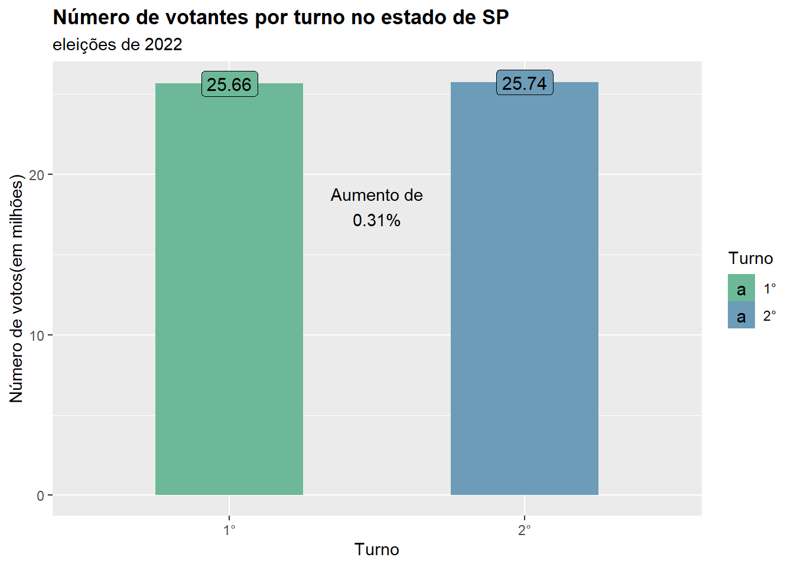
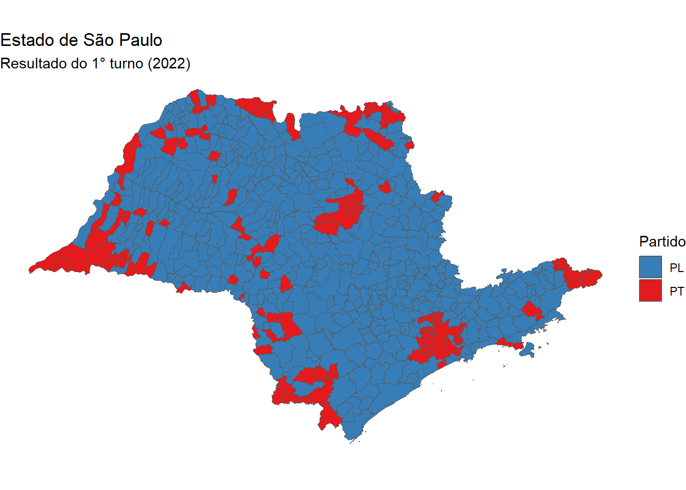
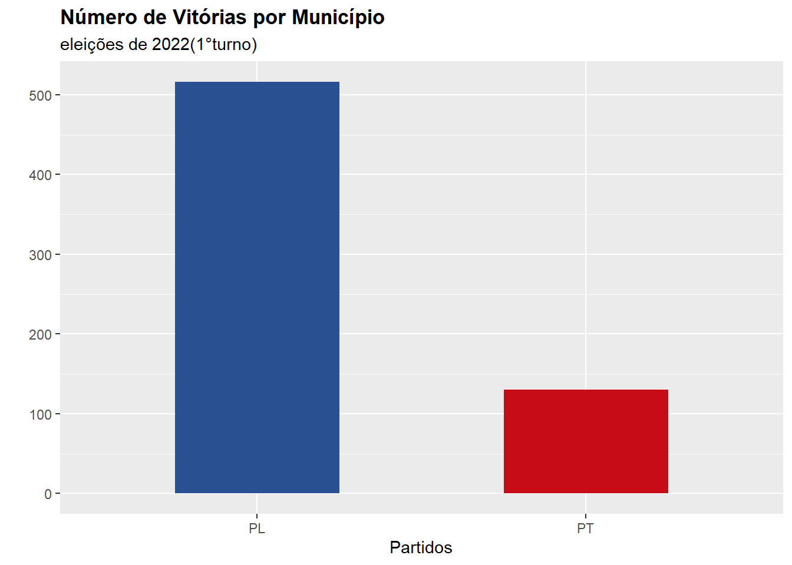
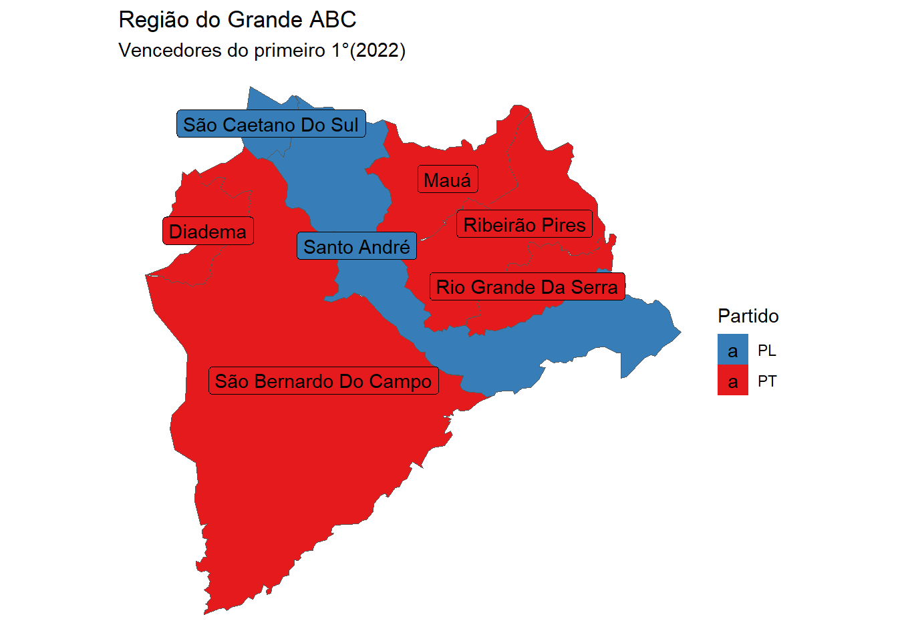
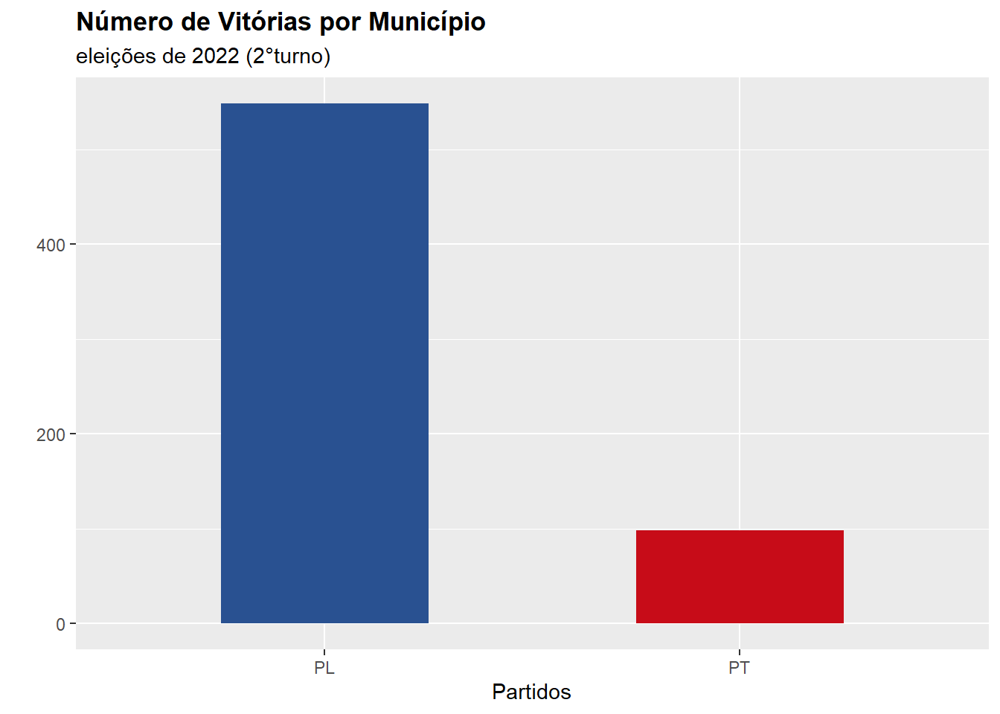
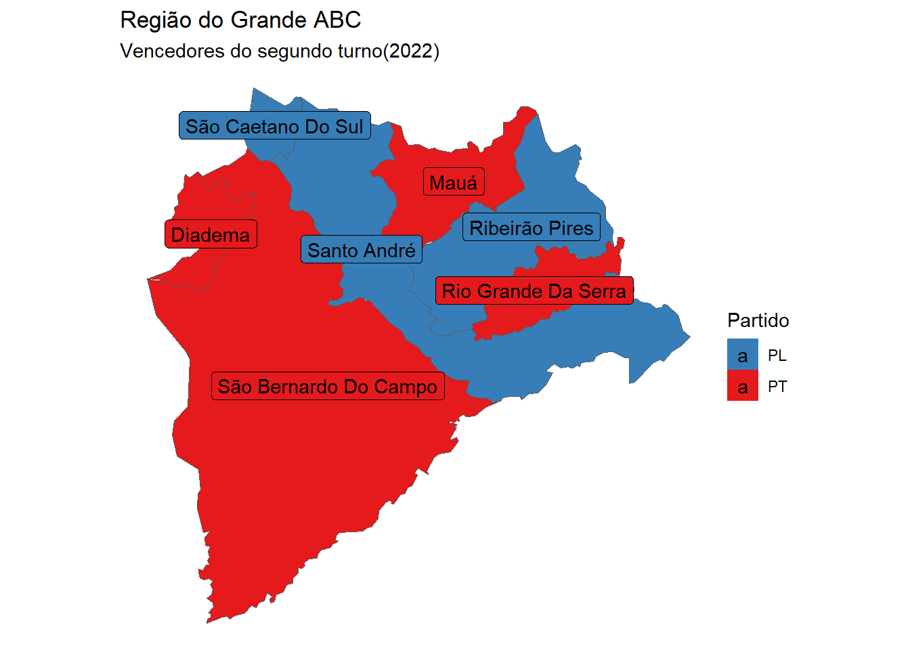

Introdução
As eleições de 2022 foram extremamente concorridas, sendo bem disputadas no primeiro e no segundo turno. Eu quero analisar a quantidade de votos em cada partido, em cada turno e obter outras informações relevantes.
Bibliotecas
Dados
O estudo desse post diz respeito das eleições de 2022 com foco no estado de São Paulo. Os dados se tratam de votos válidos, não nulos e não brancos, ou seja, somente o resultado dos partidos. Eles foram obtidos do projeto Base dos Dados, deixo aqui um pequeno tutorial de como utiliza-lo.
| ano | turno | tipo_eleicao | sigla_uf | id_municipio | id_municipio_tse | cargo | numero_partido | sigla_partido | numero_candidato | sequencial_candidato | id_candidato_bd | resultado | votos |
|---|---|---|---|---|---|---|---|---|---|---|---|---|---|
| 2022 | 1 | eleicao ordinaria | SP | 3500105 | 61018 | presidente | 16 | PSTU | 16 | 280001607831 | 27173 | nao eleito | 2 |
| 2022 | 1 | eleicao ordinaria | SP | 3500204 | 61034 | presidente | 16 | PSTU | 16 | 280001607831 | 27173 | nao eleito | 0 |
| 2022 | 1 | eleicao ordinaria | SP | 3500303 | 61050 | presidente | 16 | PSTU | 16 | 280001607831 | 27173 | nao eleito | 4 |
| 2022 | 1 | eleicao ordinaria | SP | 3500402 | 61077 | presidente | 16 | PSTU | 16 | 280001607831 | 27173 | nao eleito | 2 |
| 2022 | 1 | eleicao ordinaria | SP | 3500501 | 61093 | presidente | 16 | PSTU | 16 | 280001607831 | 27173 | nao eleito | 0 |
| 2022 | 1 | eleicao ordinaria | SP | 3500550 | 70190 | presidente | 16 | PSTU | 16 | 280001607831 | 27173 | nao eleito | 0 |
Visão Geral
Qual o número total de votos que os partidos receberam do estado de São Paulo?
Primeiro vou agrupar a soma total dos votos por turnos.
Agora posso plotar os dados com ggplot.
df |>
dplyr::mutate(N_votos = N_votos/1000000) |>
ggplot2::ggplot(aes(x =turno,y =N_votos,fill =turno,label = round(N_votos,2))) +
geom_col(width = 0.5) +
scale_fill_manual(values = c("#6cb898","#6c9cb8"),name = "Turno") +
labs(title = "Número de votantes por turno no estado de SP",
subtitle = "eleições de 2022",
x= 'Turno', y= 'Número de votos(em milhões)',
legend = "Turno"
) +
annotate("text",x=1.5,y =18, label = glue::glue('Aumento de\n{dif_perc}%')) +
geom_label(size = 4) +
theme(plot.title = element_text(face = "bold"))
Houve um aumento de 80 mil votos em relação ao primeiro turno mostrando que ocorreu uma migração possívelmente dos votos nulos e brancos, ou aqueles que não participaram da votação do primeiro dia. Claro nem todos que votaram no votaram no segundo e vice versa.
Como foi o resultado do primeiro turno?
dados |>
dplyr::filter(turno==1) |>
dplyr::group_by(sigla_partido) |>
dplyr::summarise(votos = sum(votos)) |>
dplyr::arrange(desc(votos)) |>
knitr::kable(col.names = c("Partido", "Votos"),
caption = "Resultado dos Partidos no Primeiro 1°",
align = 'cc')| Partido | Votos |
|---|---|
| PL | 12239989 |
| PT | 10490032 |
| MDB | 1625596 |
| PDT | 898540 |
| NOVO | 183719 |
| UNIÃO | 153601 |
| UP | 21665 |
| PTB | 15784 |
| PCB | 14943 |
| PSTU | 7450 |
| DC | 5015 |
Quem venceu em cada município no primeiro turno?
Posso plotar um mapa utilizando o pacote geobr.
sp_mapa <- geobr::read_municipality(code_muni = 35, year=2018) |>
dplyr::rename( id_municipio = code_muni )Using year 2018Determinar os vencedores.
Plotando os dados.
sp_dados_1 |>
ggplot2::ggplot(ggplot2::aes(geometry = geom,fill = sigla_partido),
color= "black") +
ggplot2::geom_sf() +
ggplot2::scale_fill_brewer(palette = "Set1",direction = -1,name = "Partido") +
labs(title = "Estado de São Paulo", subtitle = "Resultado do 1° turno (2022)") +
ggplot2::theme_void()
Ocorreu um empate no município de Ribeirão do Sul com PT e PL ficaram cada um com 1452 votos.
Qual partido levou mais municípios no primeiro turno?
sp_dados_1 |>
dplyr::group_by(sigla_partido) |>
dplyr::summarise(Contagem = n()) |>
ggplot2::ggplot(aes(x = sigla_partido,y = Contagem)) +
ggplot2::geom_col(width = 0.5, fill = c('#295191','#c70c18')) +
labs(title = "Número de Vitórias por Município", subtitle = "eleições de 2022(1°turno)",
y ="", x = "Partidos") +
theme(plot.title = element_text(face = "bold"))
Como ficou a região do ABC?
listaABC = list(3548708, 3547809, 3529401, 3513801, 3548807, 3543303, 3544103)
sp_dados_1 |> dplyr::filter(id_municipio %in% listaABC) |>
ggplot2::ggplot(ggplot2::aes(geometry = geom,fill = sigla_partido),
color= "black") +
ggplot2::geom_sf() +
ggplot2::scale_fill_brewer(palette = "Set1",direction = -1,name ="Partido") +
labs(title = "Região do Grande ABC",
subtitle = "Vencedores do primeiro turno (2022)") +
geom_sf_label(aes(label = name_muni, colors='white')) +
ggplot2::theme_void()
Segundo Turno
Agora com 2 partidos fica mais fácil comparar resultados. Podemos comparar a diferença de votos entre os partidos em cada turno.
Qual a porcentagem de votos que eles ganharam no segundo turno?
dados |> dplyr::filter(sigla_partido %in% c("PL","PT")) |>
dplyr::group_by(turno,sigla_partido) |>
dplyr::summarise(soma = sum(votos)) |>
tidyr::spread(key = turno,value = soma) |>
dplyr::rename(primeiro ='1',segundo = '2') |>
dplyr::mutate(dif = round(100*(segundo - primeiro)/primeiro,2)) |>
knitr::kable(col.names = c("Partido", "Primeiro","Segundo","Diferença de Votos (%)"),
caption = "Resultado dos Partidos nas Eleições de 2022",
align = 'cccc') |>
kableExtra::add_header_above(c(" " = 1,"Turno" = 2, " " = 1))| Partido | Primeiro | Segundo | Diferença de Votos (%) |
|---|---|---|---|
| PL | 12239989 | 14216587 | 16.15 |
| PT | 10490032 | 11519882 | 9.82 |
Quem venceu em cada município no segundo turno?
sp_dados_2 <- dados |>
dplyr::filter(turno==2) |>
dplyr::group_by(id_municipio) |>
dplyr::filter(votos == max(votos)) |>
dplyr::left_join(sp_mapa,by ='id_municipio')
sp_dados_2 |>
ggplot2::ggplot(ggplot2::aes(geometry = geom,fill = sigla_partido),
color= "black") +
ggplot2::geom_sf() +
ggplot2::scale_fill_brewer(palette = "Set1",direction = -1,name ="Partido") +
labs(title = "Estado de São Paulo", subtitle = "Resultado do 2° turno (2022)") +
ggplot2::theme_void()Ocorreu um empate no município de Guará com PT e PL ficaram cada um com 5529 votos.
Qual partido levou mais municípios no segundo turno?
sp_dados_2 |>
dplyr::group_by(sigla_partido) |>
dplyr::summarise(Contagem = n()) |>
ggplot2::ggplot(aes(x = sigla_partido,y = Contagem)) +
ggplot2::geom_col(width = 0.5, fill = c('#295191','#c70c18')) +
labs(title = "Número de Vitórias por Município", subtitle = "Eleições de 2022 (2°turno)",
y ="", x = "Partidos") +
theme(plot.title = element_text(face = "bold"))
Como ficou a região do ABC no segundo turno?
sp_dados_2 |> dplyr::filter(id_municipio %in% listaABC) |>
ggplot2::ggplot(ggplot2::aes(geometry = geom,fill = sigla_partido),
color= "black") +
ggplot2::geom_sf() +
ggplot2::scale_fill_brewer(palette = "Set1",direction = -1,name ="Partido") +
labs(title = "Região do Grande ABC",
subtitle = "Vencedores do segundo turno(2022)") +
geom_sf_label(aes(label = name_muni, colors='white')) +
ggplot2::theme_void()
Conclusão
Foi possível tirar muitas informações de um pequeno dataset. O projeto Base dos Dados possui mais tabelas com dados de perfil eleitoral, gastos, votos nulos e brancos., sendo possível realizar análises mais completas.